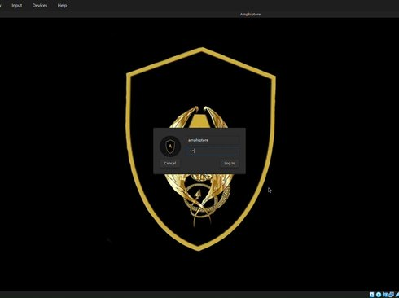
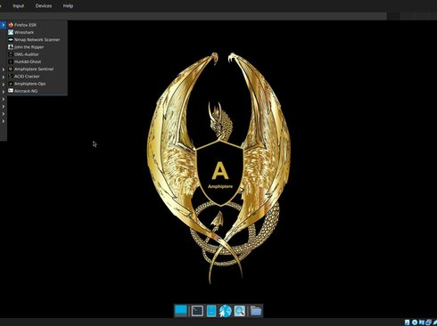

v2.5.1 • DEBIAN 12 • XFCE • 2.9GB ISO
AmphiptereOS
Purple Team Linux Distribution for Cybersecurity Enthusiasts, Researchers & Tool Creators.
Contact: amphiptereos@gmail.com
Purple Team Linux Distribution for Cybersecurity Enthusiasts, Researchers & Tool Creators.
Contact: amphiptereos@gmail.com
Purple Team is where Red (Offense) meets Blue (Defense). Amphiptere OS is built for both — attack, defend, and create.
Custom Built Tools:
Pre-installed: nmap, wireshark, Aircrack-ng, John the Ripper
Amphiptere OS is a lightweight, custom Linux distribution built on top of Debian Stable specifically for cybersecurity tasks. Rock-solid, Ultra lightweight, XFCE, Runs on 2GB RAM.
Built-in lightweight custom tools for Cybersecurity labs, Red Training & Blue Training toolkit, OSINT framework & more.
Amphiptere OS is a custom Debian-based operating system built specially for Purple Team operators and cybersecurity enthusiasts. Starting from the official Debian ISO, it is custom-built for people who love building their own cybersecurity tools and giving security researchers and students a ready-to-go platform to create, test, and run their own scripts.
When you need a reliable environment for ethical hacking, penetration testing, and security auditing, you want something streamlined. You want an operating system that gets out of your way, gives you precise control, and comes equipped with the exact utilities you need for the job.


